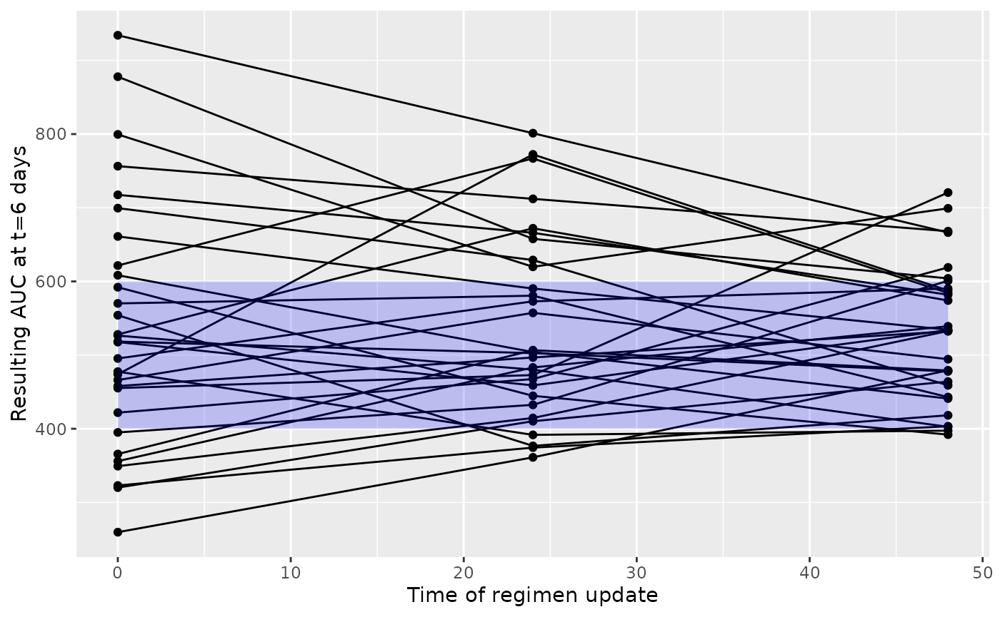
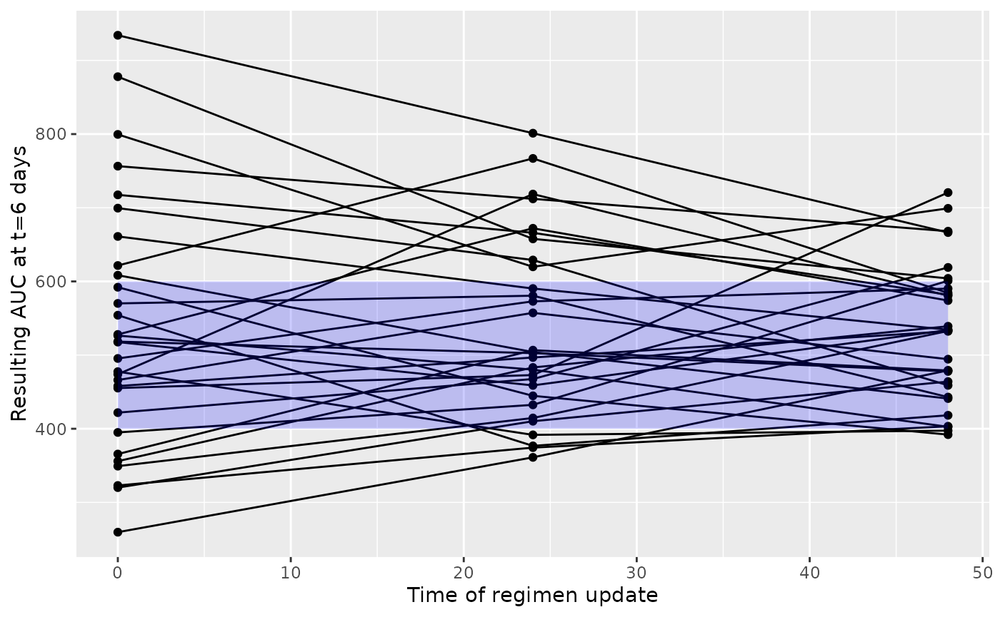
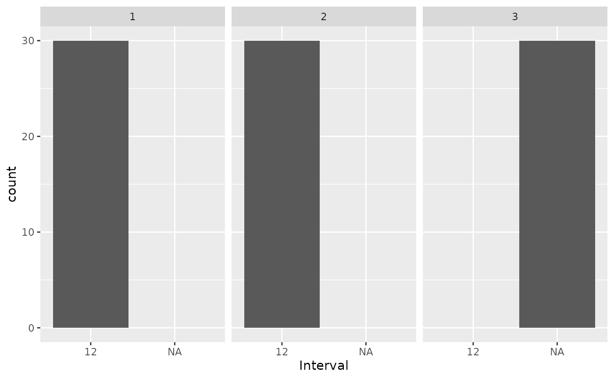

Dose and interval adaptation (vancomycin)
vancomycin_interval_adaptation.RmdIn model-informed precision dosing we can update doses, but of course
we can also reduce or increase the dosing interval length. This can also
be studied using the mipdtrial package.
library(mipdtrial)
library(dplyr) # for easier data manipulation
#>
#> Attaching package: 'dplyr'
#> The following objects are masked from 'package:stats':
#>
#> filter, lag
#> The following objects are masked from 'package:base':
#>
#> intersect, setdiff, setequal, union1. Define the trial design
This simulated trial will have two samples, with a peak and trough collected in dose 1 and 3.
tdm_design <- create_sampling_design(
offset = c(1, -1, 1, -1), # sample 1-hour before true trough, and at peak+1hr
when = c("peak", "trough", "peak", "trough"),
at = c(1, 1, 3, 3),
anchor = "dose"
)We assume that we can update the dose amount or dosing interval at dose 3 and 5 and aim for an AUC24 of 400-600 mg*h/L by day 6. We create different regimen update designs for dose-optimization and interval- optimization.
target_design <- create_target_design(
targettype = "auc24",
targetmin = 400,
targetmax = 600,
at = 6,
anchor = "day"
)
dose_update_design <- create_regimen_update_design(
at = c(3, 5),
anchor = "dose",
update_type = "dose",
dose_optimization_method = map_adjust_dose
)
interval_update_design <- create_regimen_update_design(
at = c(3, 5),
anchor = "dose",
update_type = "interval",
dose_optimization_method = map_adjust_interval
)2. Create a set of digital patient covariates
For this example, we will randomly generate a set of weights and
creatinine clearances (CRCLs) for our synthetic data set. See
sampling_timing() vignette for a longer description.
3. Load model definitions
We need to define the model parameters and variability terms for our simulation. For this study, we will use the ones defined in the models.
#> Loading required package: pkvancothomsonWe also need to link the covariates in our data set to the covariates expected in the model.
# check which covariates are required for your model using
# `PKPDsim::get_model_covariates(model)`
# check which covariates are in your data set using `colnames(dat)`
cov_mapping <- c(
WT = "weight",
CRCL = "crcl",
CL_HEMO = "CL_HEMO"
)4. Simulate a trial!
Patients will get a model-based dose (using population PK parameters), and then we will adjust either the dose or the interval based on the MAP Bayesian fit made using the collected samples.
Individual PK parameters will be randomly generated based on the interindividual variability described in the model, and residual variability will be added to each sample collected using the error model described in the model.
First let’s simulate the “dose optimization” scenario, leaving the interval fixed.
set.seed(15) # important for reproducibility
tdms <- c()
dose_updates <- c()
for (i in dat$ID) {
#################################################################################
## Create individual
#################################################################################
# get patient covariates
covs <- create_cov_object(
dat[dat$ID == i,],
mapping = cov_mapping
)
# randomly draw individual PK parameters
pars_true_i <- generate_iiv(
sim_model = model,
omega = omega,
parameters = pop_parameters
)
#################################################################################
## Find initial starting dose
#################################################################################
# find initial starting dose: define basic regimen, then upda
initial_reg <- model_based_starting_dose(
sampling_design = tdm_design,
target_design = target_design,
n = 12,
interval = 12,
t_inf = 2,
dose_resolution = 250, # round to nearest 250 mg
grid = seq(250, 6000, by = 250),
grid_type = "dose",
est_model = model,
parameters = pop_parameters,
covariates = covs,
auc_comp = attr(model, "size")
)
#################################################################################
## Main patient-level loop: run through regimen optimization
#################################################################################
treatment_summary <- sample_and_adjust_by_dose(
regimen_update_design = dose_update_design,
sampling_design = tdm_design,
target_design = target_design,
regimen = initial_reg,
covariates = covs,
pars_true_i = pars_true_i,
sim_model = model,
sim_ruv = ruv,
est_model = model,
parameters = pop_parameters,
omega = omega,
ruv = ruv
)
#################################################################################
## Collect data into object
#################################################################################
tdms <- bind_rows(
tdms,
treatment_summary$tdms %>% mutate(id = i)
)
dose_updates <- bind_rows(
dose_updates,
treatment_summary$dose_updates %>% mutate(id = i)
)
}5. Analyze results for dose-adaptation
Let’s see how well that worked. In the figure below we plot the steady state AUC that is attained using the regimen updated at the time shown on the x-axis. You would expect over time the steady state AUC to approach the middle of the range more closely, as more TDM is available to optimize the dose. Since we’re keeping the interval fixed, each patient will have the same dose update times on the x-axis.
ggplot(dose_updates) +
geom_line(aes(x = t, y = auc_before_update, group = id)) +
geom_point(aes(x = t, y = auc_before_update, group = id)) +
geom_ribbon(data = data.frame(t = c(0, max(dose_updates$t)), ymin = c(400, 400), ymax = c(600, 600)), aes(x = t, ymin = ymin, ymax = ymax), fill = "blue", alpha = 0.2) +
xlab("Time of regimen update") + ylab("Resulting AUC at t=6 days")
6. Interval adaptation
Next, we’ll simulate a trial in which the interval is optimized, and the dose is fixed (after an initial model-based dose is obtained). Again, we’ll allow the dose to be changed after doses 3 and 5 (irrespective of interval).
interval_update_design <- create_regimen_update_design(
at = c(3, 5),
anchor = "dose",
update_type = "interval"
)
set.seed(15) # important for reproducibility
tdms <- c()
dose_updates <- c()
for (i in dat$ID) {
#################################################################################
## Create individual
#################################################################################
# get patient covariates
covs <- create_cov_object(
dat[dat$ID == i,],
mapping = cov_mapping
)
# randomly draw individual PK parameters
pars_true_i <- generate_iiv(
sim_model = model,
omega = omega,
parameters = pop_parameters
)
#################################################################################
## Find initial starting dose
#################################################################################
# find initial starting dose: define basic regimen, then upda
initial_reg <- model_based_starting_dose(
sampling_design = tdm_design,
target_design = target_design,
n = 30,
interval = 12,
t_inf = 2,
dose_resolution = 250, # round to nearest 250 mg
grid = seq(250, 6000, by = 250),
grid_type = "dose",
# define model components
est_model = model,
parameters = pop_parameters,
covariates = covs,
auc_comp = attr(model, "size")
)
#################################################################################
## Main patient-level loop: run through regimen optimization
#################################################################################
treatment_summary <- sample_and_adjust_by_dose(
regimen_update_design = interval_update_design, # <-- use interval update design now!
grid = c(6, 8, 12, 16, 24, 36), # <-- passed on to the optimization function as possible interval options
sampling_design = tdm_design,
target_design = target_design,
regimen = initial_reg,
covariates = covs,
pars_true_i = pars_true_i,
sim_model = model,
sim_ruv = ruv,
est_model = model,
parameters = pop_parameters,
omega = omega,
ruv = ruv,
verbose = F
)
#################################################################################
## Collect data into object
#################################################################################
# extract metrics of interest
tdms <- bind_rows(
tdms,
treatment_summary$tdms %>% mutate(id = i)
)
dose_updates <- bind_rows(
dose_updates,
treatment_summary$dose_updates %>% mutate(id = i)
)
}7. Analyze results for interval-adaptation
When we plot the results of this simulation, we now see that dose update times are flexible, and not the same for each patient. We again see that the resulting steady state AUC24 also approaches the middle of the targeted AUC range. So this shows that the dosing interval can also be used very easily to obtain optimal drug exposure.
ggplot(dose_updates) +
geom_line(aes(x = t, y = auc_before_update, group = id)) +
geom_point(aes(x = t, y = auc_before_update, group = id)) +
geom_ribbon(data = data.frame(t = c(0, max(dose_updates$t)), ymin = c(400, 400), ymax = c(600, 600)), aes(x = t, ymin = ymin, ymax = ymax), fill = "blue", alpha = 0.2) +
xlab("Time of regimen update") + ylab("Resulting AUC at t=6 days")
dose_updates %>%
mutate(idx = rep(c(1:3), 30)) %>%
ggplot() +
geom_bar(aes(x = as.factor(interval_before_update))) +
facet_wrap(~idx) +
xlab("Interval")